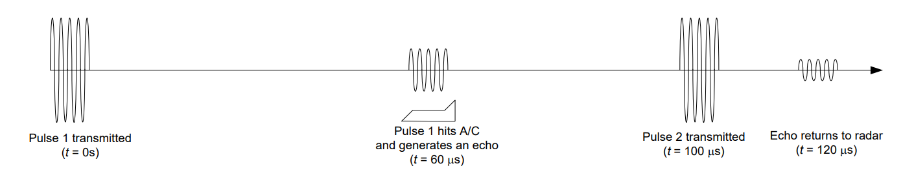
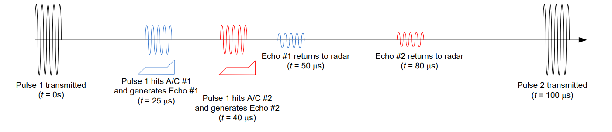

Objective 3.8#
LO# |
Description |
|---|---|
3.8 |
I can calculate the range resolution, unambiguous range, and a target’s velocity for pulse-Doppler radar. |
Pulse-Doppler RADAR Introduction#
Up to this point, we’ve assumed most RADARs use the same antenna for both transmitting and receiving. We then calculated how much power would actually return for some operational scenarios. However, if a RADAR is still transmitting when it should be receiving, it may not be able to “hear” the incoming signal.
There are two distinct ways to solve this problem: use separate antennas for transmitting and receiving (this is called bistatic) or send pulses of energy, instead of a continuous stream, with a colocated transmitter and receiver (called a monostatic RADAR).
While there are many bistatic RADARs in operation today, this essentially doubles the required hardware and increases the complexity of the processing algorithms. Some weapon systems simply cannot accommodate the necessary hardware. Therefore, the second solution, using a pulsed RADAR, is the most common.
Pulsed RADAR Parameters#
A monostatic RADAR works by periodically sending a high-frequency pulse (typically in the UHF to EHF frequency band) for a short period of time, waiting for a return, sending out the next pulse, waiting for a return, and so on. The Figure 1 shows the various parameters that determine how this process works:
Pulse width or pulse length (τ, sec): Amount of time the RADAR transmits a pulse
Pulse Repetition Frequency (PRF, Hz): The number of pulses transmitted per second.
Pulse Repetition Interval (PRI, sec): The duration of the transmit and wait cycle. Related to the PRF by:
Figure : Pulsed RADAR parameters.
Now, clearly, these parameters impact the performance of a RADAR. For example, a shorter pulse width leads to a smaller average power, which reduces the RADAR’s maximum detection distance. However, making the pulse width too long presents a challenge with resolving objects that are too close together. Therefore, as with all engineering, we must carefully balance the trade-offs with our specific requirements.
Maximum Unambiguous Range#
The maximum unambiguous range for a RADAR is the maximum range at which a RADAR can both detect two objects and differentiate between them. This range is different than the maximum ranges calculated last lesson from the LOS and RADAR equations. Those equations tell us at what distance the RADAR will see anything. However, the concept of pulsed RADAR has now introduced a problem – we have multiple pulses traveling through space at one time. As such, a RADAR’s PRF (PRI) determines its maximum unambiguous range.
An example will help clarify the situation. Consider a RADAR system with a PRF of 10 kHz, which results in a PRI of 100 μs. If the first pulse is transmitted at t = 0 s, the pulse travels through the air until it strikes an aircraft at a given time (in this case, t = 30 μs). We can calculate the range of the aircraft by multiplying the time by the speed of light (\(30\ \mu s \times 3 \times 10^{8}\ m/s = 9\ km\)). The signal then reflects off the aircraft and travels back to the RADAR, a process that takes another 30 μs. This means the pulse from this aircraft – which is 9 km away from the RADAR – will return 60 μs into the 100 μs pulse interval. In this case, the RADAR signal can make its entire two-way trip and get back to the antenna before the next RADAR pulse is transmitted.

Figure : A RADAR pulse transmitted and received with no range ambiguity.
Our range ambiguity appears when we receive echoes from farther away. Consider the case where the aircraft is 18 km away from the RADAR. In this situation, the first RADAR pulse doesn’t reach the aircraft until \(t = 60\ \mu s\). That means the RADAR won’t receive the return signal until 120 μs. Therefore, the echo from the aircraft arrives at the RADAR 20 μs after the second pulse has been sent. How does the RADAR know whether this echo came from the first pulse (from an object 18 km away) or the second one (from an object only 3 km away)? In fact, a simple RADAR can’t distinguish between the two cases, because it will always assume any received energy comes from the most recent pulse.

Figure : A RADAR pulse transmitted and received with range ambiguity.
The maximum unambiguous range, Runamb, is calculated from the PRI as:
In other words, a RADAR’s PRI setting directly determines the unambiguous range where:
If a RADAR target is beyond the maximum unambiguous range, then the RADAR will not know exactly where the target is located; its position will be ambiguous.
If the RADAR target is inside (or right at) the maximum unambiguous range, then the RADAR will know exactly where the target is located; its position will be unambiguous.
In the previous example, the RADAR’s maximum unambiguous range was 15 km, so the return from the aircraft at 18 km would actually be interpreted as being only 3 km away. To help prevent this from happening, many ground RADAR sites set their maximum unambiguous range to be equal to their Rmax(determined by LOS or by the minimum detectable power, PR,min) to prevent ambiguities.
In real RADAR systems, there are ways around range ambiguities. Modern RADARs frequently stagger the interval between pulses to allow the correct range to be determined. With a staggered PRF, a ‘packet’ of pulses is transmitted, and each pulse is on a slightly different interval from the last pulse (or viewed a different way – delayed variable amounts from the reference trigger). At the end of the packet, the timing returns to its original value, in sync with the trigger, and the process repeats.
Example Problem 1#
A ground RADAR station’s antenna is located 15 ft AGL and is looking for targets below 500 ft AGL. What PRF should be used to prevent range ambiguities?
Understand: In this case, we want to set our maximum unambiguous range to our maximum LOS range, so we can be absolutely sure we know where any target in our detection range is. To do this, we will adjust the RADAR’s PRI (and therefore its PRF).
Identify Key Information:
Knowns: We know the height of our RADAR tower and the maximum height of any expected targets.
Unknowns: The LOS range, PRI, and PRF.
Assumptions: None.
Plan: First we will calculate the maximum LOS range, based on the highest expected target (500 ft AGL). Then, we will use that to calculate the longest possible PRI.
Solve: We need to calculate the antenna’s maximum LOS range first:
We will need to set our PRI such that the maximum unambiguous range is equal to the LOS range.
We can now calculate the PRF:
Answer: The ground RADAR station should be set to a PRF of 2.51 kHz.
RADAR Range Resolution#
In addition to being able to unambiguously identify a target’s location, a RADAR’s ability to resolve two objects separated by a given distance (∆R) is called the RADAR’s range resolution. Range resolution is limited by the duration of each pulse, known as the pulse width (τ). A longer pulse means there’s more energy in the received signal, which increases the RADAR’s range. However, a wider pulse also causes less resolution in range information.
Consider a RADAR with PRF of 10 kHz and PRI of 100 μs, which sends out a 10 μs-long pulse. The transmitted wave strikes two separate aircraft – the first at t = 25 μs (7.5 km) and the second at t = 40 μs (12 km). The RADAR’s receiver will then receive two distinct returns, the first at 50 μs and the second at 80 μs, meaning the RADAR will have no trouble resolving the aircraft as unique.

Figure : A RADAR resolving two aircraft separated by more than the minimum range resolution.
However, if the separation between the two aircraft reduces to 1.2 km, we will still receive two returns, but they are so close they overlap and can’t be distinguished. For example, the pulse hits the first aircraft at t = 25 μs (7.5 km) and the second aircraft at t = 29 μs (8.7 km). The returns arrive at the receiver at t = 50 μs and t = 58 μs, respectively. Because the pulses are now overlapping, the RADAR will only see one continuous pulse. A RADAR operator may suspect that there is more than one aircraft out there, but there is no way to determine how many there are and how far apart they are from each other.

Figure : A RADAR unable to resolve two aircraft because they are separated by less than the minimum range resolution.
A RADAR’s pulse width determines the range resolution, ∆R:
In other words, a RADAR’s pulse width setting directly determines ∆R where:
If a RADAR’s targets are within ∆R of each other, the RADAR will not know exactly how many targets exist or exactly where the targets are.
If the RADAR’s targets are separated by more than ∆R, the RADAR will be able to resolve them as individual entities.
In the example above, the RADAR’s resolution is 1.5 km, so when the distance between the aircraft closed to 1.2 km, the planes were no longer seen as being separate.
Example Problem 2#
Two inbound aircraft have a nose-tail separation of 20 m. If a tracking RADAR has a pulse width of τ = 1 μs, will it be able to tell if there is more than one airplane?
Understand: The pulse width of the RADAR determines the RADAR resolution.
Key Issues:
Knowns: We know the pulse width of the RADAR and the separation of the aircraft.
Unknowns: The range resolution for this pulse width.
Assumptions: None.
Plan: Calculate the range resolution of the RADAR and determine if the aircraft are separated by more than this distance.
Analysis: In the given problem, τ = 1 μs. We can use this to solve for the RADAR resolution,
Therefore, with a pulse width of 1 μs, the RADAR cannot distinguish between objects with less than a 150-m separation. Since our planes are 20 m apart, they will be seen as a single object.
Answer: No, the RADAR will not be able to tell that there is more than one airplane, because its RADAR resolution, ΔR, is 150 m.
Target Speed Determination#
RADARs are well known for their ability to calculate the relative velocity of targets. To do so, they measure the frequency shift in a returned signal relative to the known frequency of the transmitted signal. It may seem counterintuitive that a system could receive a different frequency than it transmitted. What could cause the frequency of the RADAR return to differ from the transmitter frequency? This phenomenon is known as the Doppler shift. For example, a passing siren has a higher pitched tone as it approaches than it does after it passes by and moves away. The sound waves are traveling at a fixed speed, but the waves are compressed as the car approaches, creating an increase in frequency. As the car passes by, the waves stretch so that the peaks spread apart. This causes a decrease in the frequency. For a simple system such as that shown in Figure 6, the Doppler shift only occurs on the one-way trip from the source to the observer. However, in a RADAR, the Doppler shift is experienced twice: once as the wave strikes the target, since, in the plane’s frame of reference, the RADAR is moving and the plane is stationary; and again as the wave returns to the RADAR, as now, in the RADAR’s frame of reference, the plane is moving and the RADAR is stationary.
Figure : Doppler Effect as experienced by a target moving towards the observer.
For a stationary target, a RADAR return a pulse would be \(V_{m}\cos{(360{^\circ}f_{o}t)}\) where fo is the RADAR’s transmitter frequency. However, an approaching target with a closing speed of v (m/s) will return a pulse of
A retreating target will present a negative Doppler shift, leading to:
If the target is not traveling straight toward the RADAR, but rather at an angle θ, the frequency for closing targets will be:
and for retreating targets:
In the equations on the preceding page, the angle θ is the angle between the target’s velocity vector (the direction it is heading) and a line drawn straight from the target to the RADAR.
By determining the difference between the transmitted frequency and the frequency of the received RADAR return, the RADAR system can determine the relative speed with respect to the RADAR.
Example Problem 3#
A supersonic aircraft is approaching a RADAR system at a speed of 400 m/s with an approach angle of 30°. If the RADAR uses a frequency of 1 GHz, at what frequency will the signal return?
Understand: The Doppler shift will help us determine the received frequency. Note that, for a RADAR, the Doppler shift is a two-way shift. Also, since the airplane is moving towards the RADAR, the frequency will increase. If the airplane were moving away, the frequency would decrease.
Identify Key Information:
Knowns: We know the velocity of the incoming aircraft and the angle of its velocity vector with respect to the RADAR. We also know the transmitting frequency of the RADAR system.
Unknowns: The expected frequency of the RADAR return.
Assumptions: None.
Plan: We can use the RADAR Doppler equation to calculate the expected return frequency.
Solve: Using the RADAR Doppler equation,
Answer: The return signal will be at a frequency of 1.00000\(2309\) GHz.
Notice the use of significant figures here. Since the real information is in how much the signal changes (and the change in frequency is very small), we need to keep enough digits to capture that change.
Example Problem 4#
An airplane is flying overhead with an approach angle of 60°. If a RADAR signal departs at 300 MHz and returns at 299.999875 MHz, how fast is the airplane travelling?
Understand: We can use Doppler shift to determine the speed of objects.
Identify Key Information:
Knowns: We know the transmitted and received frequencies and the angle of the velocity vector with respect to the RADAR.
Unknowns: The aircraft’s velocity.
Assumptions: None.
Plan: First, we will solve the Doppler equation for velocity. Then, we will use the given values to determine the velocity.
Solve: Solving for velocity, our original equation (for a closing target) becomes:
We can now use this equation to solve for v:
Notice that the velocity is a negative \(125\) m/s, which means the target is moving away from the RADAR.
Answer: The airplane is moving away from the RADAR with a velocity of \(125\) m/s.